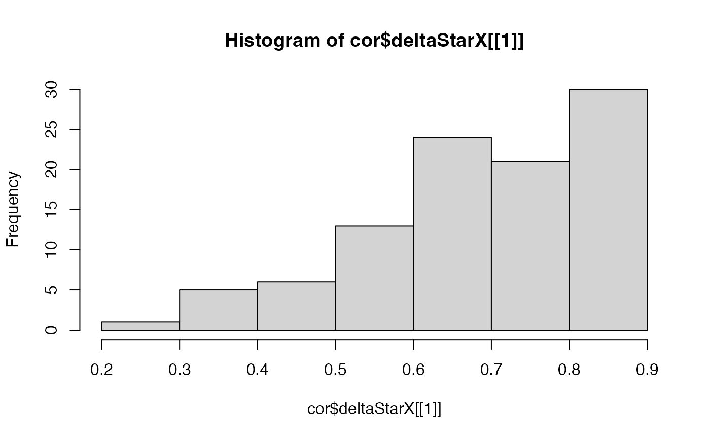
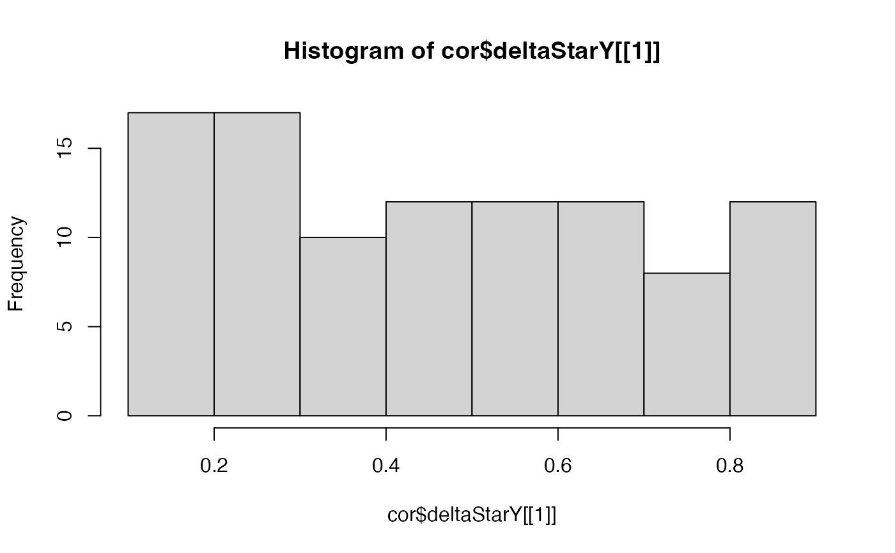
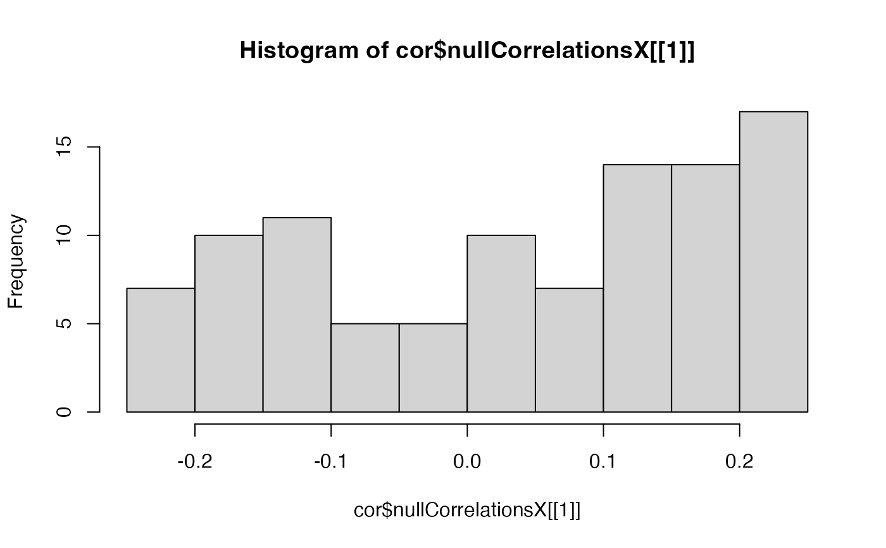
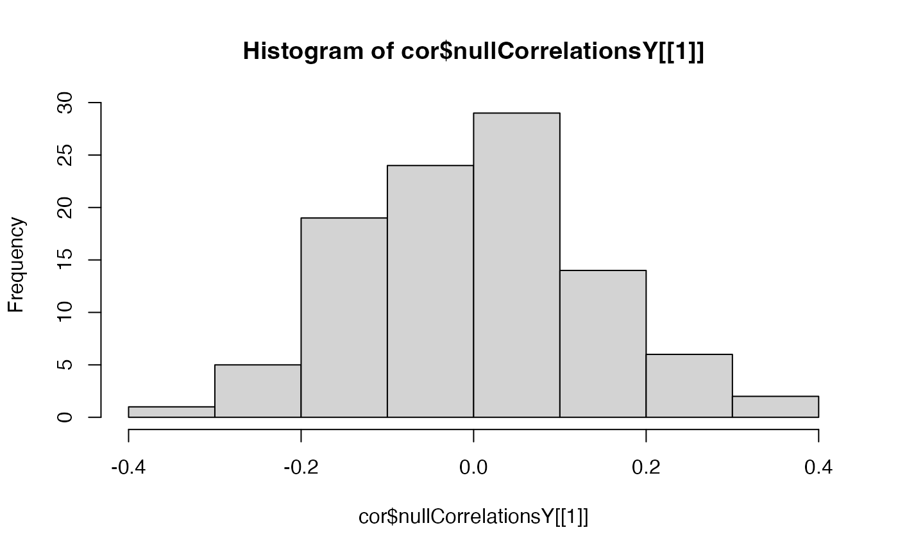
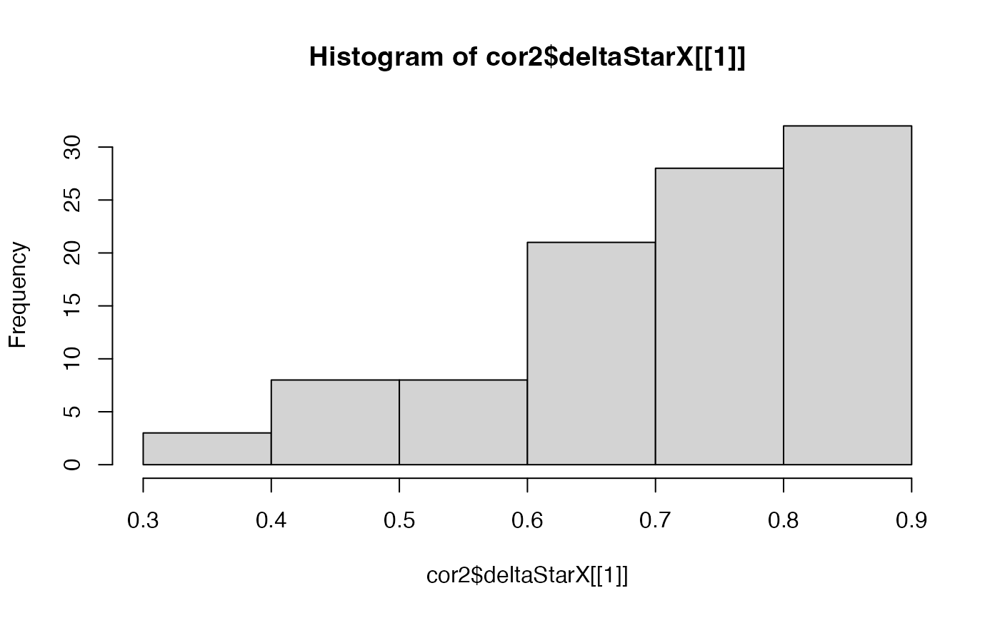
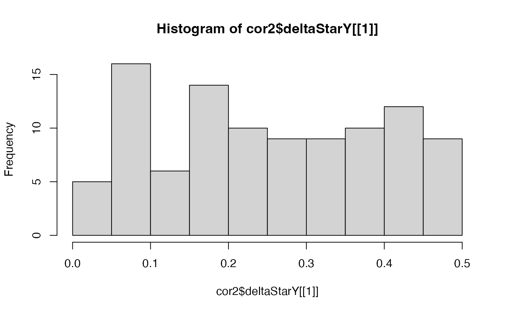
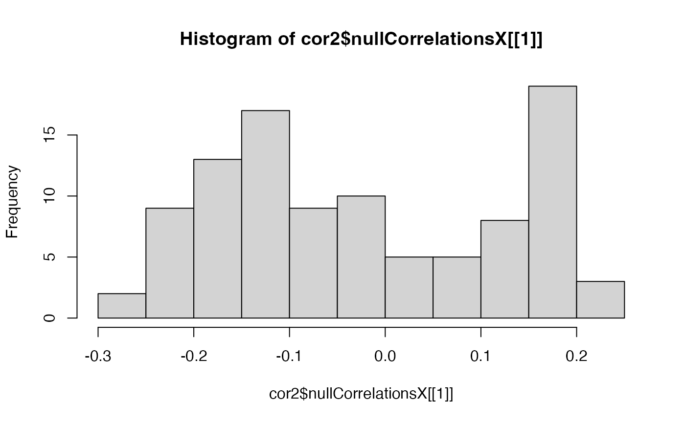
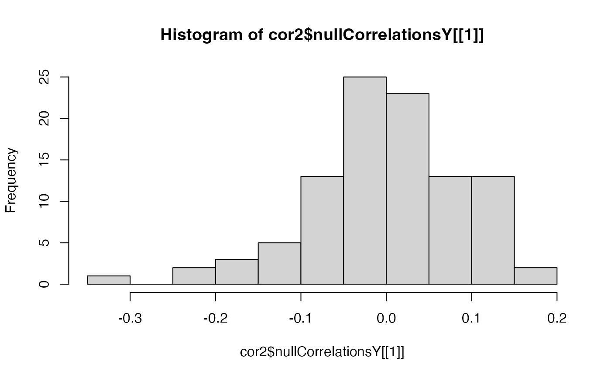
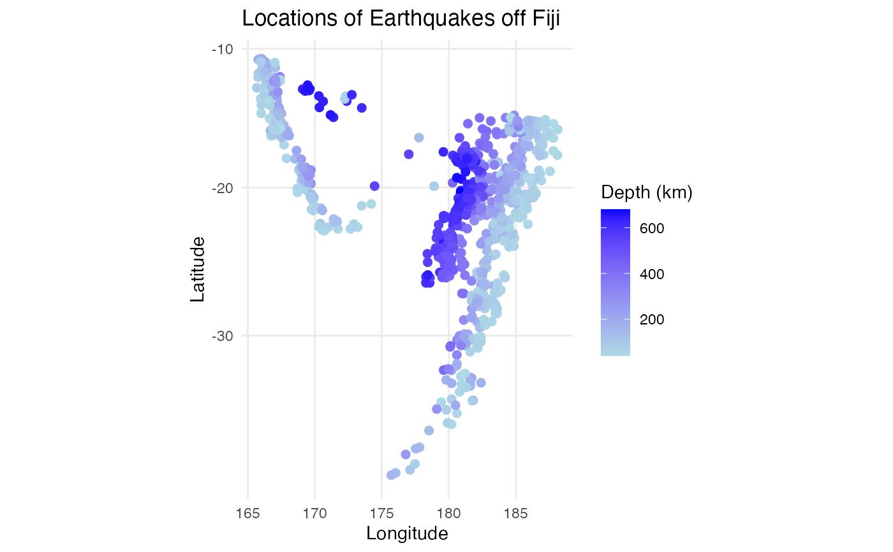
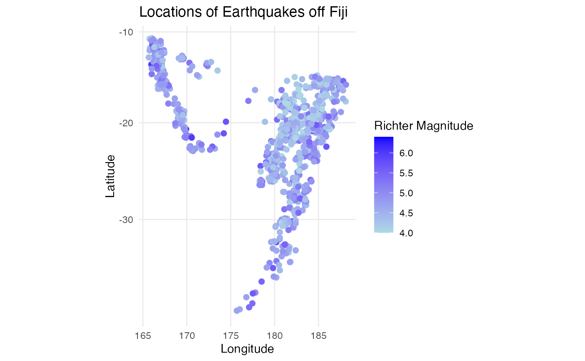

spatialCorrelation
spatialCorrelation.RdFunction to calculate Pearson's correlation between two spatial datasets. To replace the analytical p-value which results in a high false positive rate for autocorrelated spatial patterns, it calculates empirical p-values from empirical null distributions generated from permuting the datasets and then smoothing to maintain the original degree of autocorrelation
Usage
spatialCorrelation(
X,
Y,
pos,
nPermutations = 100,
deltaX = NULL,
deltaY = NULL,
maxDistPrctile = 0.25,
returnPermutations = FALSE,
nThreads = 1,
BPPARAM = NULL
)Arguments
- X
numericormatrix: a 1 x N numeric vector or matrix with N observations- Y
numericormatrix: a 1 x N numeric vector or matrix with N observations- pos
matrix: a N x 2 matrix array of spatial x,y coordinates of observations- nPermutations
integerordouble: number of permutations to generate to build the empirical null distribution. This number will determine the precision of the p-value. Default is100, such that the smallest p-value is 0.01- deltaX
numeric: A single numeric or a numeric vector for controlling the degree of smoothing in permutations of X. Delta is a proportion calculated by dividing k neighbors by N total observations in X, where k is the number of neighbors in the permutation of X that should be within the radius smoothed by the Gaussian kernel to achieve the amount of autocorrelation present in the original X. If a single delta is not known, a sequence of deltas can be inputted and the best delta will be found such that it minimizes the sum of squares of the residuals between the variogram of the permutation generated from the delta and the variogram of the target. Default isNULL. If no value is supplied fordeltaX,seq(0.1,0.9,0.1), the sequence of every 0.1 from 0.1 to 0.9, will be used to find the best delta for X.- deltaY
numeric: A single numeric or numeric vector for controlling the degree of smoothing in permutations of Y.deltaYis likedeltaXbut for observation in Y instead of X. Default isNULL. If no value is supplied fordeltaY,seq(0.1,0.9,0.1), the sequence of every 0.1 from 0.1 to 0.9, will be used to find the best delta for permutations of Y.- maxDistPrctile
numeric: percentile of distances between pixels to use as max distance in when calculating variograms. Default = 0.25. At greater distances the variogram is less precise because there are fewer pairs of points with that distance between them. Therefore, since the goal is to minimize the difference between the variogram of X and those of its permutations, the variogram should be subsetted to the percentile that is more robust.- returnPermutations
logical:FALSE(default) indicate whether the outputted dataframe will have a column with the values of the permutations used to calculate the null correlations and the empirical p-value.- nThreads
integer: Number of threads for parallelization. Default = 1. Inputting this argument when theBPPARAMargument isNULLwould set parallel execution back-end to beBiocParallel::MulticoreParam(workers = nThreads). We recommend setting this argument to be the number of cores available (parallel::detectCores(logical = FALSE)). IfBPPARAMargument is notNULL, theBPPARAMargument would overridenThreadsargument.- BPPARAM
BiocParallelParam: Optional additional argument for parallelization. This argument is provided for advanced users ofBiocParallelfor further flexibility for setting up parallel-execution back-end. Default is NULL. If provided, this is assumed to be an instance ofBiocParallelParam.
Value
The output is returned as a data.frame containing the columns:
correlationCoefPearson's correlation coefficient.pValueNaivethe analytical p-value naively assuming independent observationspValuePermuteXthe p-value when creating an empirical null from permutations of observations in XpValuePermuteYthe p-value when creating an empirical null from permutations of observations in YdeltaStarMedianXthe median delta star (the delta which minimizes the difference between the variogram of the permutation and the variogram of observations) across permutations of XdeltaStarMedianYthe median delta star across permutations of YdeltaStarXlist of delta star for all permutations of XdeltaStarYlist of delta star for all permutations of YnullCorrelationsXcorrelation coefficients for pairing Y and all permutations of XnullCorrelationsYcorrelation coefficients for pairing X and all permutations of YpermutationsX(optional) a N x B matrix, where N is the length of X and B is `nPermutations`. Each column is the resulting values of a permutation of XpermutationsY(optional) a N x B matrix, where N is the length of Y and B is `nPermutations`. Each column is the resulting values of a permutation of Y
Examples
data(quakes)
#remove duplicated positions
quakes_data <- quakes[!duplicated(cbind(quakes$lat, quakes$long)),]
cor <- spatialCorrelation(X = quakes_data$depth,
Y = quakes_data$mag,
pos = cbind(quakes_data$lat, quakes_data$long))
cor
#> correlationCoef pValueNaive pValuePermuteX pValuePermuteY deltaStarMedianX
#> cor -0.230266 1.779041e-13 0.05 0.09 0.8
#> deltaStarMedianY deltaStarX deltaStarY nullCorrelationsX
#> cor 0.5 0.5, 0.6.... 0.6, 0.7.... 0.190177....
#> nullCorrelationsY
#> cor -0.08056....
# plot the delta star (the delta which minimizes the difference between the
# variogram of the permutation and the variogram of observations) for all
# permutations to see if clear peak found in the range inputted
hist(cor$deltaStarX[[1]])

hist(cor$deltaStarY[[1]])

#plot null distribution of correlations to see if normally distributed
hist(cor$nullCorrelationsX[[1]])

hist(cor$nullCorrelationsY[[1]])

#example of inputting specific range for deltaX and deltaY
cor2 <- spatialCorrelation(X = quakes_data$depth,
Y = quakes_data$mag,
pos = cbind(quakes_data$lat, quakes_data$long),
deltaX = seq(0.05, 0.9, 0.05),
deltaY = seq(0.02, 0.5, 0.02))
cor2
#> correlationCoef pValueNaive pValuePermuteX pValuePermuteY deltaStarMedianX
#> cor -0.230266 1.779041e-13 0.04 0.01 0.75
#> deltaStarMedianY deltaStarX deltaStarY nullCorrelationsX
#> cor 0.24 0.9, 0.9.... 0.42, 0..... -0.17102....
#> nullCorrelationsY
#> cor 0.060023....
hist(cor2$deltaStarX[[1]])

hist(cor2$deltaStarY[[1]])

hist(cor2$nullCorrelationsX[[1]])

hist(cor2$nullCorrelationsY[[1]])

#visualizations of the spatial data to verify negative correlation
library(ggplot2)
p1 <- ggplot2::ggplot(quakes_data,
ggplot2::aes(x = long, y = lat, color = depth)) +
ggplot2::geom_point(size = 2) +
ggplot2::scale_color_gradient(low = "lightblue", high = "blue") +
ggplot2::labs(title = "Locations of Earthquakes off Fiji",
x = "Longitude", y = "Latitude",
color = "Depth (km)") +
ggplot2::theme_minimal() +
ggplot2::coord_map()
p2 <- ggplot2::ggplot(quakes_data,
ggplot2::aes(x = long, y = lat, color = mag)) +
ggplot2::geom_point(size = 2) +
ggplot2::scale_color_gradient(low = "lightblue", high = "blue") +
ggplot2::labs(title = "Locations of Earthquakes off Fiji",
x = "Longitude", y = "Latitude",
color = "Richter Magnitude") +
ggplot2::theme_minimal() +
ggplot2::coord_map()
p1

p2
